전자기사 (2005-09-04 기출문제)
1과목: 전기자기학
1. 그림과 같이 Gap의 단면적 S[m2]의 전자석에 자속밀도 B[Wb/m2]의 자속이 발생될 때 철편을 흡입하는 힘은 몇 N 인가?
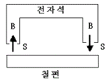
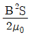
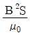
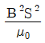
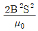
(정답률: 알수없음)

2. 서로 멀리 떨어져 있는 두 도체를 각각 V1[V] ,V2[V] (V1>V2)의 전위로 충전한 후 가느다란 도선으로 연결 하였을 때 그 도선을 흐르는 전하 Q는 몇 C인가? (단, C1[F], C2[F]는 두 도체의 정전용량이라 한다)
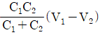
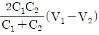
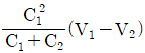
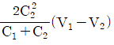
(정답률: 알수없음)
3. 간격에 비해서 충분히 넓은 평행판 콘덴서의 판사이에 비유전율 εs인 유전체를 채우고 외부에서 판에 수직 방향으로 전계 E0를 가할 때 분극전하에 의한 전계의 세기는 몇 V/m인가?
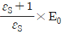
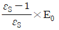
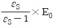
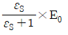
(정답률: 알수없음)
4. 벡터 포텐셜 A=-3xyzaX+2X2aY일 때 그 자속밀도 B는 얼마인가?
- B=(4x+3xz)aX-3xyaY
- B=-3xyaX+(4x+3xz)aY
- B=-3xyaY+(4x+3xz)aZ
- B=-3xyaY+3yzaX+(4x+3xz)aZ
(정답률: 알수없음)
5. 직각좌표상의 점(0,1/5,0)에서의
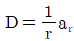
의 발산을 구하면 얼마가 되겠는가?(단, r 은 구좌표계의 표시이다.)- 5
- 25
- 1/5
- 1/25
(정답률: 알수없음)
6. 단면적 3Cm2, 평균 반지름 30Cm 인 공심 트로이드에 권선수가 500인 코일을 감고 코일에 2a 의 전류를 흘렸더니 공심 트로이드의 자속이 2×10-7Wb 이었다면 공심트로이드의 자기저항은 몇 AT/Wb인가?
- 3×109
- 5×109
- 7×109
- 9×109
(정답률: 알수없음)
7. 누설이 없는 콘덴서의 소모전력은 얼마인가? (단. C는 콘덴서의 정전용량, V 는 전압이다.)
- (1/2)CV2
- CV2
- ∞
- 0
(정답률: 알수없음)
8. 한변의 길이가 3m인 정삼각형의 회로에 2A의 전류가 흐를 때 정삼각형 중심에서의 자계의 크기는 몇 AT/m 인가?
- 1/π
- 2/π
- 3/π
- 4/π
(정답률: 알수없음)
9. 전류가 흐르고 있는 도체와 직각 방향으로 자계를 가하게 되면 도체 측면에 정,부의 전하가 생기는 것을 무슨 효과라 하는가?
- Thomson 효과
- Peltier효과
- Seebeck 효과
- Hall 효과
(정답률: 알수없음)
10. 철궤도간 거리가 1.5m 이며 궤도는 서로 절연이 되어 있다. 열차가 매시 60km의 속도로 달리면서 차축이 지구자계의 수직분력 B=0.15×10-4Wb/m2을 절단할 때 두 궤도 사이에 발생하는 기전력은 몇 V인가?
- 1.75×10-4
- 2.75×10-4
- 3.75×10-4
- 4.75×10-4
(정답률: 알수없음)
11. 전자유도 법칙에 관계가 가장 먼 것은?
- 노이만의 법칙
- 렌쯔의 법칙
- 페러데이의 법칙
- 암페어의 오른나사 법칙
(정답률: 알수없음)
12. 코일로 감겨진 자기회로에서 철심의 투자율을 μ라하고 회로의 길이를 ℓ 이라 할 때 그 회로의 일부에 미소공극 l0를 만들어 주면 회로의 자기저항은 처음의 몇 배가 되는가? (단, l0≪l 즉, l-l0≒l이다.)
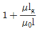
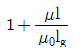
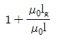
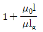
(정답률: 알수없음)
13. 자기회로에 대한 키르히호프의 법칙에 대한 설명으로 가장 적당한 것은?
- 임의의 결합점으로 유입하는 자속의 대수합은 0 이다.
- 임의의 폐자로에서 자기저항ㅇ과 기자력의 대수합 은 0 이다.
- 임의의 폐자로에서 자기저항과 기자력의 대수합은 0 이다.
- 임의의 폐자로에서 자속과 기자력의 대수합은 0 이다
(정답률: 알수없음)
14. 균일 분포전류 I[A] 가 반지름 a[m] 인 비자성 원형도체에 흐를 때 단위길이당 도체 내부의 인덕턴스는 몇 H/m인가? (단, 도체의 투자율은 μ0로 가정한다.)
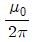
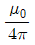
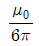
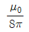
(정답률: 알수없음)
15. 다음 사항 중 옳은 것은?
- 지구 상공에는 대기가 전리되어 있어 전자와 이온으로 구성된 전리층이 있는데 A층, B층, C층, D층, E층, F층 등이 있다.
- 지구상에서 전자파를 발산하면 파장이 긴 것일수록 전리층을 쉽게 벗어 날 수가 있다.
- 장파는 주로 F층에서 반사되어 지구로 되돌아 온다.
- 송신 안테나에서 방사되는 전자파는 직접파, 대지 반사파, 산악 회절파, 전리층 반사파 등으로 수신 안테나에 이른다.
(정답률: 알수없음)
16. 정전용량이 1μF인 공기콘덴서가 있다. 이 콘덴서 판간의 1/2인 두께를 갖고 비유전율 εr=2인 유전체를 그 콘덴서의 한 전극면에 접촉하여 넣었을 때 전체의 정전용량은 몇 μF 가 되는가?
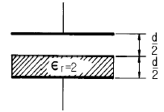
- 2
- 1/2
- 4/3
- 5/3
(정답률: 알수없음)
17. 3개의 도체 a, b, c 가 있다. 도체 c 를 a 로 정전차폐했을 때의 조건은?
- a, b 사이의 유도계수는 0 이다.
- b, c 사이의 유도계수는 0 이다.
- b의 전하는 c의 전위와 관계가 있다.
- c의 전하는 b의 전위와 관계가 있다.
(정답률: 알수없음)
18. 영역 1 의 자유공간에서 전파 Ei0[V/m]와 자파Hi0[A/m]가 비유전율 εr=3을 가진 유전체 영역으로 수직하게 입사하게 될 때 계면에서의 값으로 옳은 것은?
- 반사 전파의 크기는 -0.268 Ei0이다.
- 투과 전파의 크기는 0.732Ei0이다.
- 반사 자파의 크기는 1.268Hi0이다.
- 투과 자파의 크기는 1.268Hi0이다.
(정답률: 알수없음)
19. 10mm의 지름을 가진 동선 50A의 전류가 흐를 때 단위시간에 동선의 단면에 통과하는 전자의 수는 약 몇 개인가?
- 7.85×1016
- 20.45×1015
- 31.25×1019
- 50×1019
(정답률: 알수없음)
20. 진공 중에 놓인 Q[C]의 전하에서 발산되는 전기력선의 수는?
- Q
- ε0
- Q/ε0
- ε0/Q
(정답률: 알수없음)
2과목: 회로이론
21. 그림과 같은 선형 저항기에 나타나는 전압은?
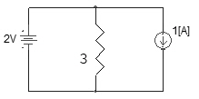
- 1[V]
- 2[V]
- 3[V]
- 4[V]
(정답률: 알수없음)
22. 다음 회로에서 전압전달비를 구하면?(단, S=jω)
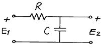
- 1/(RCS+1)
- R/(RCS+1)
- CS/(RCS+1)
- RCS/(RCS+1)
(정답률: 알수없음)
23. 시간 a 만큼 옯겨진 그림고 같은 단위 계단 함수를 라플라스 변환하면?
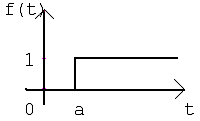
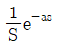
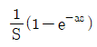
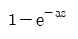
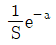
(정답률: 알수없음)
24. R-L-C직렬공진회로에서 공진 주파수가 fr이고, 반전력 대역폭이 △f일 때 공진도 Qr은?
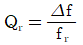
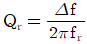
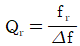
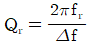
(정답률: 알수없음)
25. 2개 이상의 전원을 내포한 선형 회로에서 어떤 가지에 흐르는 전류나 단자의 전압에 대해 해석하는데 사용하는 것은?
- Norton의 정리
- Thevenin의 정리
- 치환정리
- 중첩의 정리
(정답률: 알수없음)
26. 그림고 같은 회로에서 테브난 등가 전압은?
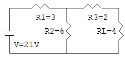
- 10.5V
- 14V
- 19.5V
- 21V
(정답률: 알수없음)
27. 다음 그림과 같은 4단자 회로의 어드미턴스 파라미터의 Y22는?
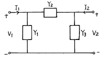
- Y1+Y2
- Y2+Y3
- Y3
- Y2
(정답률: 알수없음)
28. 두 회로간에 쌍대 관계가 옳지 않은 것은?
- KㆍVㆍL → KㆍCㆍL
- 테브낭 정리 → 노튼 정리
- 전압원 → 전류원
- 폐로전류 → 절점전류
(정답률: 알수없음)
29. 단자 회로에 인가되는 전압과 유입되는 전류의 크기만을 생각하는 겉보기 전력은?
- 유효전력
- 무효전력
- 평균전력
- 피상전력
(정답률: 알수없음)
30. 저항 3Ω과 리액턴스 4Ω을 병렬 연결한 회로의 역률은?
- 0.2
- 0.4
- 0.6
- 0.8
(정답률: 알수없음)
31. 그림과 같은 회로에서 단자 1, 2간의 인덕턴스 L은?
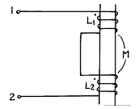
- L1+L2
- L1+L2-2M
- L1+L2+2M
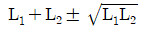
(정답률: 알수없음)
32. 그림은 반파정류에서 얻은 파형이다. 이 전류의 실효치(rms)는?
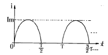
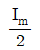
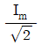
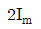
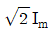
(정답률: 알수없음)
33. 수돈 4단자 회로망(또는 2단자 쌍 회로망)이 가역적이기 위한 조건이 바르지 못한 것은? (단, 다음의 그림에서 I1=Y11V1+Y12V2,-I2=Y21V1+Y22V2이고 V1과 I1에 관해서는 V1=AV2+BI2, I1=CV2+DI2이다.)
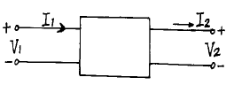
- Z12=Z21
- Y12=Y21
- AB-CD=1
- h12=-h21
(정답률: 알수없음)
34. R, L, C가 직렬로 연결될 때 공진현상이 일어날 조건은? (단, ω는 각 주파수이다.)
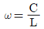
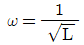
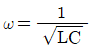
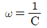
(정답률: 알수없음)
35. 다음 파형 중에서 실효치가 가장 큰 것은?(단, 주기는 모두 동일함)
- 삼각파
- 구형파.
- 톱니파
- 정현파
(정답률: 알수없음)
36.
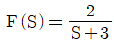
의 라플라스 역변환은?- 2e-3t
- 2e3t
- 3e-2t
- 3e2t
(정답률: 알수없음)
37. 1 neper는 약 몇 dB인가?
- 3.146
- 8.686
- 7.076
- 6.326
(정답률: 알수없음)
38. S-평면상에 영점(0)과 극(X)이 다음과 같이 표현되는 함수는?
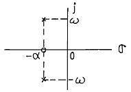
- 단위계단함수
- sinωt
- e-atsinωt
- e-atcosωt
(정답률: 알수없음)
39. 그림의 정현파에서 의 주기 T를 올바르게 표시한 것은?
- 2πω
- 2πf
- ω/(2π)
- (2π)/ω
(정답률: 알수없음)
40. 대칭 4단자의 영상 임피던스는?
(정답률: 알수없음)
3과목: 전자회로
41. B급 푸시풀(Push-pull) 증폭기의 설명으로 옳은 것은?
- 최대 효율은 π/4이다.
- 컬렉터 효율이 A급보다 낮다.
- Cross-over 일그러짐이 제거된다.
- 공급 전원을 흐르는 전류의 변동 폭이 매우 작다.
(정답률: 알수없음)
42. 미분기의 출력과 입력은 어떤 관계인가?
- 출력은 입력의 변화율에 반비례한다.
- 출력은 입력읜 변화율에 비례한다.
- 출력은 입력의 변화율에 무관하다.
- 출렫은 입력의 변화율의 제곱에 비례한다.
(정답률: 알수없음)
43. 다음과 같은 빈 브리지(Wine Bridge)형 발진 회로의 발진 주파수는?
(정답률: 알수없음)
44. 그림에서 A는 연산 증폭기이다. V1=2[V], V2=4[V]일 때 Vo는?
- 6[V]
- -2[V]
- 2[V]
- 8[V]
(정답률: 알수없음)
45. 궤환 증폭기에서 무궤환시 전압 이득이 100이고, 고역 3[dB] 차다 s주파수가 15[kH] 일 때, 궤환시 전압 이득이 50이면 궤환시 고역 3[dB] 차단 주파수는?
- 5 [kHz]
- 10 [kHz]
- 20 [kHz]
- 30 [kHz]
(정답률: 알수없음)
46. B급 TR 푸시풀 전력 증폭기의 최대 출력은?
(정답률: 알수없음)
47. 턴-오프 시간(turn-off time)은?
- 축척시간과 하강시간의 합이다.
- 상승시간과 지연시간의 합이다.
- 상승시간과 축척시간의 합이다.
- 상승시간과 하강시간의 합이다.
(정답률: 알수없음)
48. FET의 핀치오프(Pinch-off) 전압에 대한 설명 중 옳지 않은 것은?
- 핀치오프 전업은 채널(Channel)이 완전히 막히는 상태에 이르는 전압이다.
- 핀치오프 전압은 캐이러(Carrier)의 전하량에 반비례 한다.
- 핀치오프 전압은 채널 폭의 자승에 비례한다.
- 핀치오프 전압은 불순물 농도에 비례한다.
(정답률: 알수없음)
49. 음귀환에 의한 입ㆍ출력 임피던스 변화의 설명 중 옳은 것은?
- 직렬-전압 귀환 회로의 출력 임피던스는 증가한다.
- 직렬-전류 귀환 회로의 입력 임피던스는 감소한다.
- 병렬-전압 귀환 회로의 출력 임피던스는 증가한다.
- 병렬-전류 귀환 회로의 입력 임피던스는 감소한다.
(정답률: 알수없음)
50. FET가 보통의 접합 트랜지스터에 대해 갖는 장점이 아닌 것은?
- 입력 임피던스가 크다.
- 진공관이나 트랜지스터에 비하여 잡음이 적다.
- 이득×대역폭이 커서 고주파에서도사용하기 쉽다.
- 오프셋 전압이 없으므로 좋은 초퍼로서 사용할 수 있다.
(정답률: 알수없음)
51. 베이스 저항에 큰 영향을 주는 것이 아닌 것은?
- 이미터 접합의 바이어스 전압
- 컬렉터 접합의 바이어스 전압
- 베이스 영역의 불순물 전압
- 베이스 영역의 폭
(정답률: 알수없음)
52. 반파정류의 경우 출력파의 맥동율 rh와 전파정류의 경우 출력파의 맥동율 rf는 각각 약 얼마인가?
- rh=0.964, rf=0.482
- rh=0.846, rf=0.423
- rh=0.622, rf=0.311
- rh=1.21, rf=0.482
(정답률: 알수없음)
53. 트랜지스터 컬렉터 누설 전류가 주위 온도 변화로 1.6[μA]로 증가되었을 때 컬렉터 전류의 변화가 1[mA]라 하면 안정률은 약 얼마인가?
- 1
- 6.3
- 16
- 10π
(정답률: 알수없음)
54. 수정 발진기의 가장 중요한 특징으로 옳은 것은?
- 발진조건을 만족하는 유도성 주파수 범위가 매우 넓다.
- 발진주파수를 바꿀 때는 수정자체를 바꿀 필요가 없다.
- 주파수 안정도가 높다.
- 수정편의 Q가 매우 작다.
(정답률: 알수없음)
55. 다음과 같은 Comparator 회로에서 입력에 정현파를 인가하면 출력 파형은?
- 구형파형
- 정현파형
- 톱니파형
- ramp 파형
(정답률: 알수없음)
56. 다음 회로의 트랜지스터를 근사적인 hwjd수 모델로 대치 했을 때 전압이득(Vo/Vs)으로 옳은 것은?
- -hieRL/(Rs+hfe)
- -hfeRL/(Rs+hie
- hieRL/(Rs-hfe)
- hfeRL/(Rs-hie)
(정답률: 알수없음)
57. 그림과 같은 연산 증폭기에서 입력 바이어스 전류란?
- Vo=0일때(IB1+IB2)/2
- Vo=∞일때(IB1+IB2)/2
- Vo=0일때(IB1+IB2)
- Vo=∞일 때(IB1+IB2)
(정답률: 알수없음)
58. R=1[MΩ], C=1[μF]의 직렬회로에 V=10[V]를 공급할 때 1[sec]후의 VR양단 전압은?
- 6.32[V]
- 1[V]
- 10[V]
- 3.68[V]
(정답률: 알수없음)
59. Negative feedback 회로에 대한 설명으로 옳지 않은 것은?
- 이득 감소
- sensitivity 감소
- 대역폭 감소
- 잡음 감소
(정답률: 알수없음)
60. 그림과 같은 브리지 정류회로에 관한 설명 중 옳지 않은 것은?
- RL에는 A쪽에거 B쪽으로 전류가 흐른다.
- RL에 흐르는 전류는 전파 정류된 파형이다.
- 다이오드에 걸리는 역방향 전압 최대치는 T의 2차 전압 최대치의 2배에 가깝다.
- RL에 걸리는 전압 최대치는 T의 2차 전압 최대치에 가깝다.
(정답률: 알수없음)
4과목: 물리전자공학
61. 터널 다이오드(Tunnel Diode)에서 터널링 (Tunnelling)은 언제 발생하는가?
- 역방향에서만 발생
- 정전압니 높을 때만 발생
- 바이어스가 영 일 때 발생
- 아주 낮은 전압에 이쓴 정방향에서 발생
(정답률: 알수없음)
62. 페르미 디락 (Fermi-Dirac) 분포에 대한 설명 중 가장 옳지 않은 것은?
- 고체내의 전자는 Pauli의 베타 원리의 지배를 받는다.
- 대부분의 전자는 이 분포의 저에너지역에 조재한다.
- 금속은 온도에 관계없이 무관한다.
- 이 분포에 의하면, 도체가 가열될 때 저자는 분자 비열 용량에 거의 영향을 주지 않는다.
(정답률: 알수없음)
63. 일 함수(Work function)의 설명중 옳지 않은 것은?
- 금속의 종류에 따라 값이 다르다.
- 일 함수가 큰 것이 전자 방출이 쉽게 일어난다.
- 표면장벽 에너지와 Fermi 준위와의 차를 일 함수라 한다.
- 전자가 방출되기 위해서 최소한 이 일 함수에 해당되는 에너지를 공급받아야 한다.
(정답률: 알수없음)
64. 일반적인 드리프트 트랜지스터 장ㆍ단점에 대한 설명 중 그 내용이 가장 부적당한 것은?
- 컬렉터 용량이 감소한다.
- 이미터 효율이 적어진다.
- 이미터 용량이 증가한다.
- 컬렉터 항복 전압이 낮아진다.
(정답률: 알수없음)
65. 선형적인 증폭을 위해서 트랜지스터의 동작점은?
- 포화영역 부근에 세워져야 한다.
- 차단영역 부근에 세워져야 한다.
- 화성영역 부근에 세워지기만 하면 된다.
- 차단영역과 포화역역 중간 지점에 세워져야 한다.
(정답률: 알수없음)
66. 절대온도 0[° K]가 아닌 상태의 에너지 준위에서 입자의 점유율이 1/2이 되는 조건은?
- E=Ef
- E=(1/2)Ef
- E＞Ef
- E＜Ef
(정답률: 알수없음)
67. 실리콘 단결정 반도체에서 P형 불순물로 적합하지 않은 것은?
- In
- Ga
- As
- B
(정답률: 알수없음)
68. 원자의 성질로 4가지 양자수(n, l, m, s)로서 결정 되는 한개의 양자 상태에는 한 개만의 전자 밖에 들어갈 수 없다는 원리는?
- 루더포드(Ruther ford)의 분사의 원리
- 파우리(Pauli)의 베타 원리
- 보어(Bohr)의 이론
- 아인슈타인(Einstein)의 에너지 보전 법칙
(정답률: 알수없음)
69. 캐리어의 확산 길이는 무엇에 의존하는가?
- 반도체의 모양
- 캐리어의 이동도에만 의존
- 캐리어의 수명시간에만 의존
- 캐리어의 이동도와 수명시간에 의존
(정답률: 알수없음)
70. 서미스터(Thermistor)는 저항이 무엇에 대하여 비직선적으로 변하는 소자인가?
- 전류
- 전압
- 주파수
- 온도
(정답률: 알수없음)
71. 이동도(mobility)에 관한 설명으로 옳지 않은 것은?
- 이동도의 단위는 m2/Vㆍsec
- 반도체에서 전자의 이동도는 정공의 이동도보다 크다.
- 도전율이 크면 이동도도 크다.
- 온도가 증가하면 이동도는 증가한다.
(정답률: 알수없음)
72. 1 eV를 올바르게 설명한 것은?
- 1개의 전자가 1J의 에너지를 얻는데 필요한 에너지이다.
- 1개의 전자가 1cm의 간격을 옮기는데 필요한 전압이다.
- 1개의 전자가 1V의 전위차 사이를 옮기는데 필요한 운동 에너지이다.
- 1개의 전자가 1[m/sec]의 속도를 얻는데 필요한 에너지이다.
(정답률: 알수없음)
73. 반도체에 전장을 가하면 전자는 어떤 운동을 하는가?
- 원 운동
- 불규칙 운동
- 포물선 운동
- 타원 운동
(정답률: 알수없음)
74. 전자 수가 32인 원자의 가전자 수는?
- 2개
- 4개
- 8개
- 18개
(정답률: 알수없음)
75. JFET의 핀치오프 전압에 대한 설명으로 옳지 않은 것은?
- 채널의 폭에 비례한다.
- 재료의 비유전율에 반비례한다.
- 채널 부분의 도우핑 밀도에 비례한다.
- 드레인 소스간을 개방한 경우는 공간 전하층으로 채널이 막혔을 때의 게이트 역전압이다.
(정답률: 알수없음)
76. 루비 레이저(ruby Laser)의 펌핑(pumping) 에너지는?
- 광적 에너지인다.
- 직류 전원이다.
- 주파수가 낮은 교류 전원이다.
- 자계 에너지이다.
(정답률: 알수없음)
77. 진성 반도체에서 온도가 상승하면?
- 반도체의 저항이 증가한다.
- 원자의 에너지가 증가한다.
- 정공이 전도대에 발생된다.
- 금지대가 감소한다.
(정답률: 알수없음)
78. 두 도체 또는 반도체의 폐회로에서 두 접합점의 온도차로서 전류가 생기는 현상은?
- 홀(Hall) 효과
- 광전(Photo) 효과
- 지벡(Seebeck) 효과
- 펠티어(Peltier) 효과
(정답률: 알수없음)
79. 균일자계 B에 자계와 직각 방향으로 속도 V를 갖고 입사한 전자의 각 속도는? (단, 전자의 질량을 m, 전하량은 q)
(정답률: 알수없음)
80. 쌍극성 접합 트랜지스터(BJT)의 순방향 전류전달비αF가 0.98일 때 전류이득 βF는?
- 40
- 43
- 46
- 48
(정답률: 알수없음)
5과목: 전자계산기일반
81. Channel 과 DMA에 관한 설명 중 옳지 않은 것은?
- DMA는 하나의 인스트럭션으로 여러 블록을 입ㆍ출력 할 수 있다.
- DMA 방식은 CPU의 간섭없이 일련의 데이터를 기억장치와 직접 입ㆍ출력할 수있는 방식이다.
- Block multiplexer channel 은 여러개의 고속의 장치를 동시에 동작시킬 수 있다.
- Channel은 처리 속도가 빠른 CPU 와 처리속도가 늦은 입ㆍ출력 장치 사이에 발생된느 작업상의 낭비를 줄여 준다.
(정답률: 알수없음)
82. 다음 중 프로그램 카운터가 명령의 번지 부분과 더해져서 유효 번지가 결정되는 주소 지정 방식은?
- 상대 번지 모드
- 직접 번지 모드
- 인덱스 번지 모드
- 베이스 레지스터 번지 모드
(정답률: 알수없음)
83. 명령 인출 사이클(fetch cycle)에 대한 설명으로 옳지 않은 것은?
- machine cycle에 속한다.
- 명령어를 해독하는 과정이 포함된다.
- 반드시 execution cycle에서만 발생된다.
- program counter에서 주소가 MAR 로 전달된다.
(정답률: 알수없음)
84. 흐름도 작성시 주의사항이 아닌 것은?
- 모든 문장을 하나의 블록으로 상세히 그린다.
- 되도록이면 선이 얽히지 않게 그린다.
- 적당한 설명을 덧 붙인다.
- 서브루틴은 따로 그린다.
(정답률: 알수없음)
85. 논리 연산 중 마스트 동작은 어느 동작과 같은가?
- OR
- AND
- EX-OR
- NOT
(정답률: 알수없음)
86. 다음 중 순서도(flowchart) 종류에 해당되지 않는 것은?
- 시스템 순서도(system flowchart)
- 실체 순서도(entity flowchart)
- 상세 순서도(detail flowchart)
- 개략 순서도(general flowchart)
(정답률: 알수없음)
87. 다음의 구성은 무엇을 나타내는가?
- 중앙처리장치
- 산술논리연상장치
- 제어장치
- 입ㆍ출력 처리기
(정답률: 알수없음)
88. 다음 중 부동소수점 표현의 수들 사이의 곱셈 알고리즘 과정에 해당되지 않는 것은?
- 0인지 여부를 조사한다.
- 가수의 위치를 조정한다.
- 가수를 곱한다.
- 결과를 정규화 한다.
(정답률: 알수없음)
89. 수평형 제어 방식의 설명 중 옳지 않은 것은?
- 성능의 향상을 꾀한다.
- 주로 소형 계산기에서 채택하는 제어 방식이다.
- 하나의 비트가 한 개의 마이크로 동작에 대응한다.
- 제어 워드가 크므로 넓은 메모리 공간이 필요하다.
(정답률: 알수없음)
90. 다음 제어기억 장치에서 주소를 결정하는 방법으로 옳지 않은 것은?
- 제어 주소 레지스터의 내용을 하나씩 감소시킨다.
- 마이크로 명령에서 지정하는 번지로 무조건 분기한다.
- 상태 비트에 따른 조건부 분기를 한다.
- 매크로 동작 비트로부터 ROM(제어기억장치)으로의 매핑
(정답률: 알수없음)
91. 마이크로 프로그램의 설명 중 가장 적당한 것은?
- 작은 보조기억장치에 저장된 프로그램이다.
- 크기가 작은 프로그램을 말한다.
- 컴퓨터에 하드웨어로 내장된 컴퓨터의 동작을 제어하기 위한 프로그램이다.
- 마이크로 컴퓨터에서 사용되는 프로그램이다.
(정답률: 알수없음)
92. 다음 그림은 어떤 컴퓨터 구조에 해당하는 것인가? (단,CU:control unit, PU:processor unit, MM: memory module, IS:instruction stream, DS: data stream)
- SISD 구조
- SIMD 구조
- MISD 구조
- MIMD 구조
(정답률: 알수없음)
93. 흐름도(flowchart)에서 기호는?
- 프로세스(process)
- 판단(decision)
- 시작, 끝(terminal)
- 반복(repeat)
(정답률: 알수없음)
94. 다음 불 대수 중 옳지 않은것은?
- A+0=A
- AㆍA=1
(정답률: 알수없음)
95. 일반적으로 마이크로컴퓨터의 시스템 보드(System Board)상에 직접 연결되어 있지 않은 장치는?
- 마이크로 프로세서(Micro Prcessor)
- ROM(Read Only Memory)
- RAM(Random Access Memory)
- 하드 디스크(Hard Disk)
(정답률: 알수없음)
96. 스택(stack) 구조가 갖는 명령 형식은?
- 0-주소명령형식
- 1-주소명령형식
- 2-주소명령형식
- 3-주소명령형식
(정답률: 알수없음)
97. 다음의 어셈블리 프로그램을 실행하는 동작은?
- AND
- Exclusive OR
- NAND
- OR
(정답률: 알수없음)
98. 다른 세가지와 그 값이 같지 않은 것은?
- 2진수 101111
- 8진수 57
- 10진수 48
- OR
(정답률: 알수없음)
99. 외부 인터럽트(External Interrupt) 발생 원인으로 볼 수 없는 것은?
- Machine Check Interrupt
- I/O Interrrupt
- Program Check Interrupt
- Time Out Interrupt
(정답률: 알수없음)
100. 다음 그림과 같은 명령 형식에서 나타낼 수 있는 명령어와 주소의 수는?
- OP = 8, Address = 256
- OP = 16, Address = 512
- OP = 8, Address = 512
- OP = 16, Address = 256
(정답률: 알수없음)